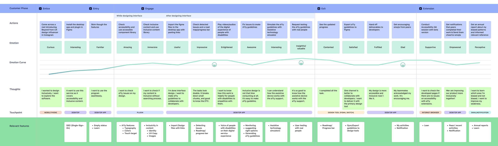

Problem
Wizard-style onboarding forces every user through the same N-step intro regardless of context. For screen-reader users, the visual carousel slides announce empty content. For users with reduced-motion preferences, animated walkthroughs are jarring or get skipped entirely. For returning users on a new device, the wizard is friction they’ve already paid — with no signal to the product that they already know it. Onboarding is treated as a single binary (show the wizard or not) instead of a state-aware composition that adapts what it discloses, when, and how.
The cost is not theoretical. Inaccessible onboarding is where many users drop off before reaching the product at all — a problem that compounds for users already underserved by the typical interface.
Pattern
Adaptive onboarding is an exercise in progressive interface disclosure. Detect state inputs across three categories and compose the onboarding from modular disclosures, each gated independently:
- First-run vs. returning state. Track in localStorage / app state / server-side per account. Returning-on-new-device is a third state worth surfacing differently from cold first-run.
- User preferences.
prefers-reduced-motion,prefers-color-scheme, OS-level large-text settings, locale,prefers-contrastwhere available. - Interaction context. Pointer type (
any-pointer: coarseimplies touch-primary), assistive-technology hints (no reliable JS API, but focus patterns and Web Speech APIs can hint).
Compose the onboarding from disclosures rather than steps. Each disclosure is independent and surfaces where it’s useful:
- Text-first feature summary — the canonical version, always available, accessible by default. Never gated.
- Visual feature tour — layered on top for users without reduced-motion preference. Hidden, not just paused, when motion is reduced.
- Contextual tutorial — surfaces in the moment of task the first time the user reaches the feature, not pre-loaded as a wizard up front.
- Sensitive setting prompts (notifications, location, payment) — always defer to first-use, never block onboarding.
The result: every user gets the same canonical information, but the shape adapts. Reduced-motion users skip the animations and read the text. Screen-reader users hear a single coherent summary instead of empty carousel slides. Returning users skip what they’ve already seen.
Reference
This pattern is the core education model of Beyond, Young Kim’s 2023 MFA thesis. Beyond’s Annotation Assistant doesn’t run a wizard at startup — it surfaces an animated guide for each annotation type (keyboard navigation, structure landmarks, alt text) when the designer reaches that step, paired with preloaded samples and step-by-step contextual tutorials. Education is progressively disclosed in the moment of task, not pre-loaded as a fixed flow before the designer can begin work.
The pattern in this library generalizes that to product onboarding broadly. See Beyond MFA thesis (opens in new tab) for the original prototype.
Visual examples

Code
State detection at the CSS layer (no JS needed). Text-first is the default; the visual tour is the layer added back when motion is permitted:
/* Default: text-first summary; visual tour hidden */
.feature-tour-text { display: block; }
.feature-tour-animation { display: none; }
@media (prefers-reduced-motion: no-preference) {
.feature-tour-animation { display: block; }
.feature-tour-text { display: none; }
}First-run vs. returning state, in JS:
const KEY = 'app:onboarding-complete';
const isFirstRun = !localStorage.getItem(KEY);
if (isFirstRun) {
showCoreSummary(); // independent disclosure
localStorage.setItem(KEY, '1');
}
// Contextual tutorials surface on first reach of a feature,
// gated by per-feature keys — not coupled to first-run.Annotation
In design files, document each disclosure as a separate component with its gate condition spelled out. Avoid coupling unrelated disclosures — the gates are independent. A typical spec entry:
Disclosure: feature-tour
Gate: prefers-reduced-motion: no-preference
Fallback: feature-summary-text (always present)
Surface: first reach of /home; dismissible
Disclosure: tutorial-landmarks
Gate: first-reach of annotation flow
Surface: inline at annotation step
Dismissible: yes
Persistent: no (re-surface for new project)WCAG mapping
-
2.3.3 Animation from Interactions (opens in new tab)
AAA
animated walkthroughs respect
prefers-reduced-motion - 3.2.1 On Focus (opens in new tab) A focus into a disclosure doesn’t trigger unrequested context changes
- 3.2.2 On Input (opens in new tab) A selecting an onboarding option doesn’t trigger unexpected navigation
- 1.4.13 Content on Hover or Focus (opens in new tab) AA tooltip-style contextual disclosures are dismissible, hoverable, persistent
Related patterns
- Inclusive UX copy (#03), where the text-first summary is the canonical version and its copy choices matter most
- Focus order & keyboard navigation (#06), the focus path through onboarding disclosures must be reachable
- Accessibility-mode validation (#09), validate each onboarding state combination, not just the default